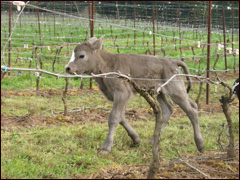

“We need to learn the difference between living purposefully and merely existing by taking the time to sharpen our awareness and figuring out how to do things in the right way for the right reasons.”
– Chris Carlberg
The Carlberg family is dedicated to farming with a conscience: We want to promote the overall health of our soil, the vitality of our plants and animals and the authenticity of our wines while farming to build natural beauty, ecological diversity, and sustainable productivity.
We believe in a symbiotic relationship with our local environment, and in using correct timing and soil remediation which help build balance and energy in both, soil and fruit of the plants grown there. The earth has a heartbeat and we try to pay attention to this rhythm.
In our stewardship role as farmers, we’ve come to know the earth as a vital part of who we are. In this spirit of solidarity, we would like to encourage others who share our awareness to take part in our Building Bridges for Life campaign.
Our family and business currently dedicate a percentage of the sale of our wines to supporting the peaceful, humanitarian efforts of these three organizations:
Thank you
We do not weave the web of life. We are merely a strand in it. Whatever we do to the web, we do to ourselves.
– Chief Sealth (Seattle) Suquamish Leader